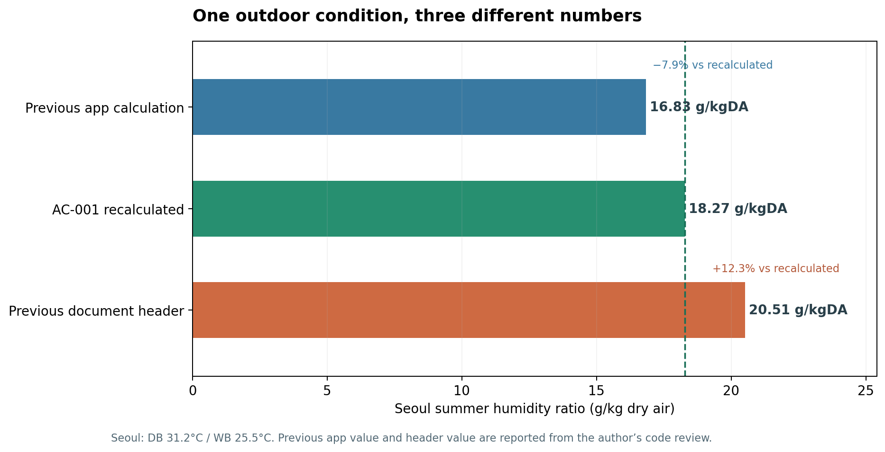

이번 주에 설계기준서 세 개를 제가 만든 용량계산서 앱의 코드와 한 줄씩 맞춰봤습니다. 외기조건(AC-001), 해외 외기조건(AC-002), 실내 설계온습도(AC-003)입니다.
결과부터 적겠습니다. 계산식이 틀린 곳 1곳, 화면 안내가 실제 값과 다른 곳 5곳, 기준서끼리 숫자가 어긋난 곳 2곳을 찾았습니다. 그리고 1곳은 일부러 고치지 않았습니다. 실 유형 10종의 실내조건은 기준서와 10/10 일치했습니다.
이 기록을 남기는 이유가 있습니다. 건축도면을 넣으면 AI가 위생 계통도, 평면도, 상세도, 수량산출의 초안을 만드는 웹앱을 만들고 있습니다. 도면 전체를 다루는 앱으로 넓히면서 질문이 바뀌었습니다. “이 선은 어떤 기준으로 그렸고, 기준이 바뀌면 무엇을 다시 계산해야 하나?” 그 질문에 답하려면 기준서와 코드가 같은 말을 하고 있어야 합니다. 이번 주는 그걸 확인하는 첫 주였습니다.
AC-001: 표는 12% 크게, 계산식은 8% 작게
[별표 7]은 여름 DB·WB, 겨울 DB·RH만 직접 줍니다. 여름 수분비, 겨울 습구온도 같은 나머지 값은 계산해야 합니다. 기준서의 종전 표를 대조하다 서울 여름 수분비가 걸렸습니다. 종전 0.02051, 계산조건을 명시해 다시 구한 값 0.01827 kg/kgDA. 17개 지역 전부에서 종전값이 11.4~12.8% 컸습니다. 전 지역에서 같은 방향의 차이가 나왔지만, 그 패턴만으로 종전 산식까지 단정할 수는 없었습니다.
원인을 좁혔습니다. 같은 표의 겨울 습구온도는 영하에서 얼음 포화식을 쓰니 17개 지역 모두 0.1℃ 안으로 재현됐습니다. 이 열에는 재현 가능한 계산 경로가 있었다는 뜻입니다. “종전 수분비는 습구온도의 포화수분비를 썼을 것”이라는 가설은 차이가 −5.5~+2.3%로 흩어져 기각했습니다. 결국 종전 산식은 특정하지 못했습니다. 그래서 원칙을 하나 세웠습니다. 출처가 확인되는 원문은 고정하고, 설명할 수 없는 파생값은 계산 경로를 남겨 다시 구한다.
기준서를 고친 뒤 앱을 열었습니다. 두 가지가 나왔습니다. 앱의 지역 데이터에는 종전값이 그대로 남아 계산서 머리말에 찍히고 있었습니다. 더 중요한 건 두 번째였습니다. 여름 잠열 계산은 표값을 쓰지 않고 DB·WB에서 매번 수분비를 다시 계산하는데, 그 식이 습구온도계의 수증기압 식을 수분비에 그대로 옮긴 형태였습니다. 단위가 맞지 않는 식이라 서울 수분비가 0.01683, 기준서보다 7.9% 작게 나왔습니다.

설명용 조건(서울 외기 300㎥/h, 실내 26℃·50%)으로 외기 잠열을 계산하면 기준 값은 약 1.95kW, 종전 앱 계산식은 약 1.58kW로 19% 작습니다. 17개 지역에서 12~26%였습니다. 현열이 더해지면 전체 코일 용량의 차이는 줄어들지만, 계산서를 받은 사람은 화면만 봐서는 이 차이를 알 수 없습니다.
식을 AC-001의 단열포화 관계식으로 바꾸고, 지역 데이터를 확정값으로 교체하고, 앱 식으로 계산한 수분비가 기준서 확정값과 같은지 17개 지역 회귀 테스트를 붙였습니다. 17/17 일치(차이 0.000006kg/kgDA 이내)입니다.
AC-003: 계산은 맞았고, 설명이 틀렸습니다
실내 설계온습도는 결과가 달랐습니다. 사무실, 중앙제어실, 탈의실, 샤워실, 탕비실, 화장실, 전기실, 기계실, 발전기실, 창고. 앱에 들어 있는 실 유형 10종의 냉방·난방 온도와 습도를 기준서와 한 칸씩 대조했고 10/10 일치했습니다. 계산은 맞았습니다.
틀린 건 사용자가 보는 설명이었습니다. 실 유형을 고를 때 보이는 안내표가 실제 적용값과 다섯 곳에서 달랐습니다.
| 위치 | 안내 화면 | 실제 적용값·기준서 |
|---|---|---|
| 탈의실 냉방 | “—” (냉방 없음) | 26℃ / 60%, EHP |
| 사무실 난방 | 21℃ / 50% | 21℃ (가습 대상 아님) |
| 탕비실 난방·환기 | 21℃ / 50%, 15회/h | 21℃, 8회/h |
| 창고 환기 | 3회/h | 5회/h |
| 실내조건 출처 표기 | [별표 7] | [별표 8] |
사무실 칸의 “21℃ / 50%”는 사소해 보이지만 의미가 다릅니다. 난방 RH를 적는 것은 겨울에 그 습도를 유지하겠다는 뜻이고, 곧 가습설비를 요구합니다. 계산은 가습하지 않는데 화면은 가습한다고 말하고 있었습니다. 안내표를 실제 적용값에 맞춰 고쳤습니다.
기준서 쪽에서도 하나 나왔습니다. AC-001에서 공기 현열계수를 0.34에서 0.336으로 통일하자, 대표 사무실의 온도차 비례 부하계수가 122.1W/K에서 120.9W/K로 바뀌었습니다. 그런데 AC-003의 예제는 여전히 122.1을 빌려 쓰고 있었고, 전기실 환기 예제의 표는 본문이 0.336으로 계산한 8,064W를 8.2kW로 적고 있었습니다(0.34 기준). 한 기준서를 고치면 그 숫자를 빌려 쓰는 다른 기준서도 함께 낡습니다. 두 예제를 0.336 기준으로 다시 계산해 블로그 글과 기준서 원문에 함께 반영하고 개정 기록을 남겼습니다.
AC-002: 온도 칸만 늘리는 수정은 보류했습니다
해외 외기조건 기준서의 핵심 경고는 이것입니다. “DB만 현장 값으로 바꾸고 습도는 국내 값을 그대로 두지 말 것.” 건조한 해외 현장(38℃·21℃)에서 서울 습도를 그대로 두면, 실제로는 외기가 실내를 건조하게 만드는(−0.48kW) 상황을 제습부하 +1.95kW로 계산하게 됩니다.
그런데 앱에 “외기온 직접입력”이 있었습니다. 냉방 DB만 바꾸고, 습구온도는 선택한 국내 지역 값을 그대로 쓰는 입력입니다. 해외 현장에 이 칸을 쓰면 기준서가 경고한 실수를 앱이 그대로 재현합니다.
여기서는 바로 고치지 않기로 판단했습니다. 습구온도 칸 하나를 더 붙이는 건 쉽습니다. 하지만 AC-002가 요구하는 건 칸 하나가 아닙니다. 관측지점(WMO 번호, 표고에 따른 대기압), 실 중요도별 백분위(Critical 0.4%/99.6%, General 1%/99%), 냉방 DB와 짝을 이루는 MCWB, 별도의 제습·가습 조건까지 한 세트입니다. 칸 하나만 붙이면 “해외도 된다”는 인상만 주고, 백분위와 피크 수분 조건이 빠진 계산서가 나옵니다. 그래서 이번 주에는 블로그 글과 앱의 직접입력 칸에 “이 입력은 해외 현장용이 아니다”라고 명확히 적고, 해외 지점 입력은 이 한 세트를 다루는 기능으로 따로 설계하기로 했습니다.
이번 주에 정한 일하는 방식
AI는 17개 지역 일괄 계산, 가설별 대조, 코드와 기준서의 줄 단위 비교를 빠르게 해줬습니다. 무엇을 원문으로 고정할지, 설명할 수 없는 값을 버릴지, 어떤 어긋남을 지금 고치고 어떤 것을 설계부터 다시 할지는 제가 정했습니다. 0.02051과 0.01683은 둘 다 그럴듯한 숫자입니다. 설계자가 계산서 머리말과 부하 결과를 함께 읽어야 이 차이를 발견할 수 있었습니다.
세 기준서를 거치며 원칙이 하나 더 생겼습니다. 기준서와 코드 사이에 테스트를 둔다. 테스트가 없으면 둘은 조용히 따로 갑니다. 이번 주에 붙인 17개 지역 회귀 테스트는 외기 수분비의 어긋남을 잡습니다. 실 유형 10종은 기준서와 앱 적용값을 대조해 10/10 일치를 확인했습니다. 이 대조를 자동화 테스트로 고정했는지는 별도로 확인해 기록하겠습니다. 위생설계 앱에서도 관경표, 부하단위, 통기 기준을 같은 방식으로 기준서와 묶을 생각입니다. AI가 배관 경로를 제안하고 설계자가 고쳤을 때, 그 판단이 계통도·평면도·수량까지 따라가는지도 같은 방식으로 확인해야 합니다.
지금 어디까지 왔나
| 상태 | 내용 |
|---|---|
| 완료 | AC-001 파생값 재계산, 앱 습구-수분비 식 교체, 17개 지역 회귀 테스트 17/17 |
| 완료 | AC-003 실 유형 10종 대조 10/10, 앱 안내표·출처 표기 5곳 정정 |
| 완료 | AC-003 원문 예제 2곳 정정(부하계수 120.9W/K, 전기실 환기 표 0.336 기준), 개정 기록 반영 |
| 다음 개정 | AC-002 건조 현장 예제 반올림 정정(8.5 → 8.6g/kgDA, −0.49 → −0.48kW) |
| 완료 | 저장된 프로젝트를 다시 열면 외기값을 확정값으로 갱신 (종전 저장본에는 서울 겨울 수분비 0.00121이 남아 가습 계산에 쓰이고 있었음) |
| 설계 예정 | 해외 관측지점 입력: 지점·표고·실 중요도별 백분위·MCWB·제습·가습 조건 한 세트 |
| 완료 | 앱의 외기온 직접입력 칸에 해외 사용 제한 안내 표시 |
| 다음 적용 | 위생설계 앱의 기준값을 같은 방식의 테스트로 기준서와 묶기 |
저는 현장의 문제를 설계자가 쓸 수 있는 도구로 만들고, 결과를 함께 검증하는 FDE를 목표로 합니다. 완성된 화면만큼, 어긋난 숫자를 찾고 가설을 좁히고 무엇을 지금 고칠지 판단한 기록도 제가 만든 제품을 판단하는 자료가 되길 바랍니다.
이번 주 설계기준서 노트: AC-001 국내 외기조건 · AC-002 해외 외기조건 · AC-003 실내 설계온습도